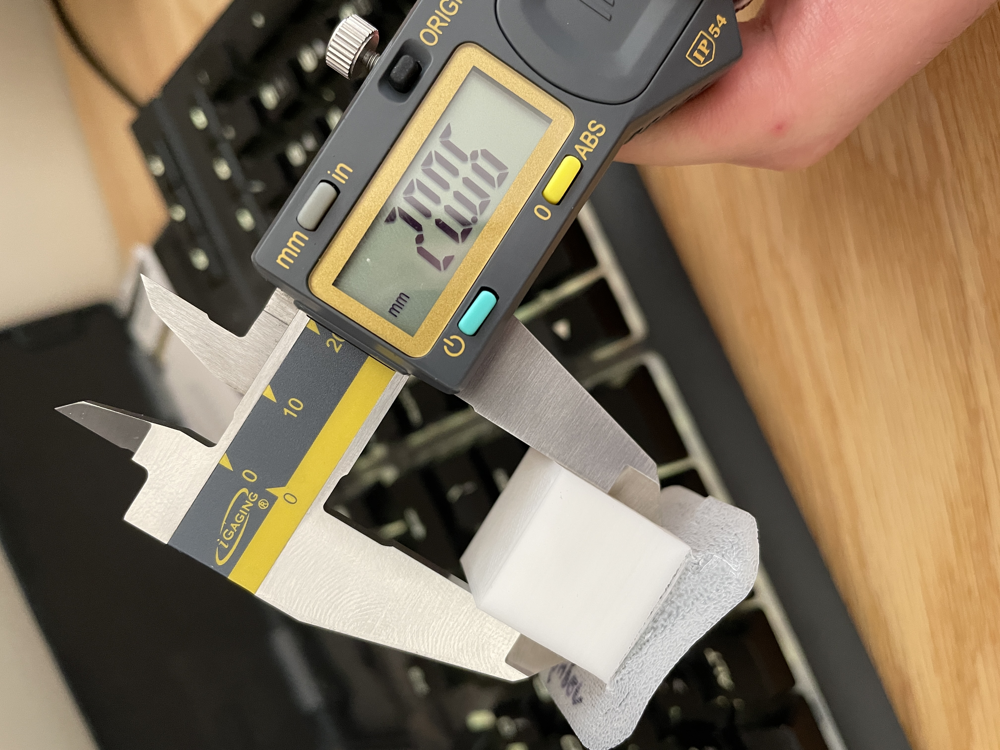
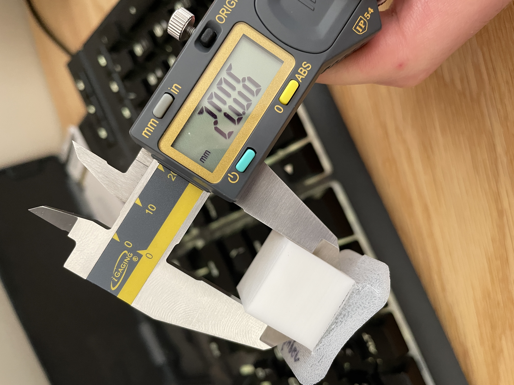
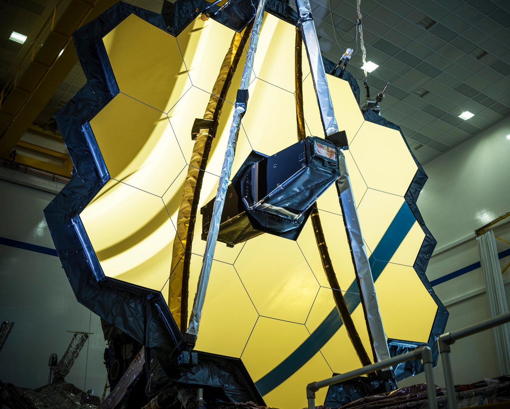

033D Printing & JWST
JWST Mirror Array
This week we were told to make a handful of basic geometries to learn
how to tune in the settings of a printer. I thought that having a printer
at home would have made this faster, but it likely didn't. I set it up a
couple weeks ago but hadn't had the time to do anything with it until this
week. Plus it's a slightly overwhelming tool to learn. I was right to be
wary of it, because I spent more than half of my time this week tramming,
resizing prints, playing with all the settings (there are over a hundred
sliders!), and troubleshooting bed adhesion issues.
For all of those reasons, this week was very educational, but underwhelming.
After creating our shapes, we needed to create at least 15 clips to hold
cardboard together.
Wanting to keep my clips as small as possible to minimize printing time and
not waste material on something I wouldn't use again, I kept the clip simple.
This was my downfall.
With so little surface contact with the bed, the bed had to be perfectly
trammed at each of the six printing sites on the bed. This is incredibly
difficult. I knew that a brim or a glue stick would have helped, but I
wanted to see if I could accomplish the print without either of those
helpful tools (crutches).
Tools, Materials, & Credits
- Rhino
- Cura
- Adobe Illustrator
- Laser Cutter
- 3D Printer (Ender 3 s1 Pro)
- Protopasta PLA
- Single-Ply Chipboard
- Bed Leveling Tutorial
- Bed Leveling Print
Process
Digital Design
The shapes were quickly modeled in Rhino, exported to .stl, and sliced in Cura.
The clip was iterated upon so many times before it got to this final shape.
Clip File

This was one of the shapes we had to print to show us that orientation of a print is important for reasons like considering how the piece will be used, but also because this is a really inefficient print that's also going to make for poor tolerances.
Fabrication
I started by tramming my printer and making sure that the assembly was
correctly done. This took a lot of trial and error and hours of reading
userguides and watching YouTube videos.
 This is what it looks like when the nozzle is nust barely not close enough
to the bed.
This is what it looks like when the nozzle is nust barely not close enough
to the bed.

If there isn't enough surface area, or if the first layer isn't correctly printed onto the bed, this happens :(

This tutorial was very helpful.
Eventually, I got everything tuned perfectly and my tolerances were looking great!

 

Then I changed fillament *face palm*
One entire day of wonderful learning later, I got 5 clips to print before the 6th failed to adhere.

Then I had to find something to use my clips on. Why not recreate the James Webb Space Telescope's mirror array in what is almost definately not how they prototyped the original idea.
